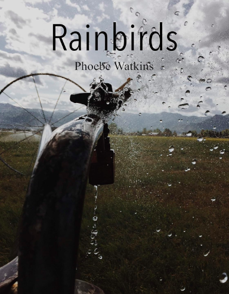
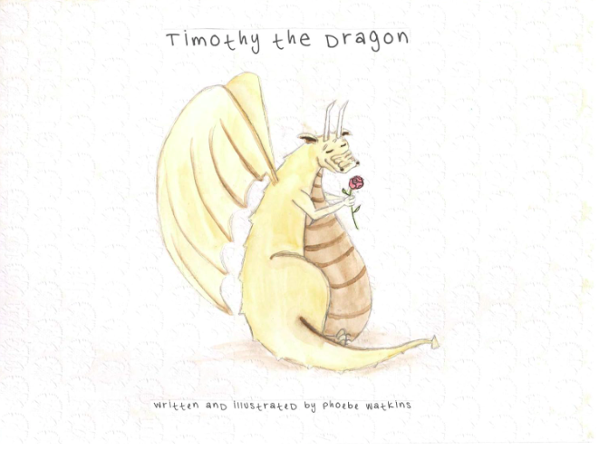
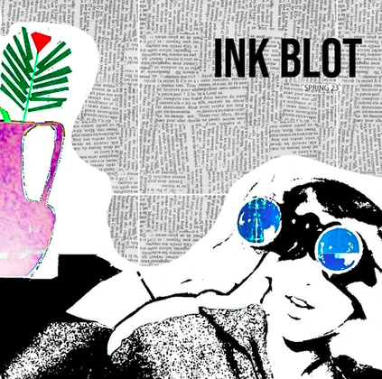

Other Creative Projects
Publications   
As a writer, I'm always hoping to share my creative work with the world. At age sixteen, I published a children's book. All proceeds went to a family in my community whose eight-year-old daughter was battling cancer. At age seventeen, I published a book of poetry, documenting my early-morning irrigation job in the fields of Heber, Utah. Recently, I've been published twice in Brigham Young University-Idaho's literary anthology, Inkblot.
To read my published work, check out my children's book, Timothy the Dragon, my book of poetry, Rainbirds, and my work in BYU-I's Inkblot.
Bible Watercolor Series


Watercolor has always been my favorite art medium. Those soft, forgiving washes convey emotions that other forms can't. I love mixing mellow watercolor with stark pen to create contrast and tell stories. This passion came to fruition during my 18-month mission for the Church of Jesus Christ of Latter-day Saints. I created this Bible-inspired art for a social media campaign on my personal page. When I began using my own art to reach my audience, my outreach tripled.
See more of my work for this series here.
Music
I've been writing, recording, and producing my own music since 2017. My hope is to touch those that listen so they know they're not alone. Check out the stop-motion music videos I create for my original songs, or find me on Spotify.